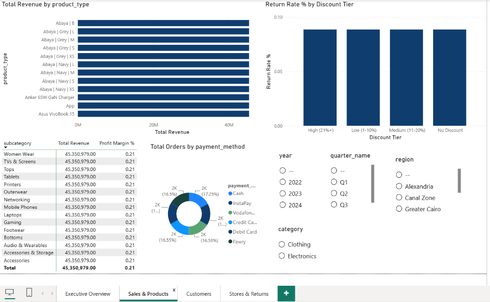
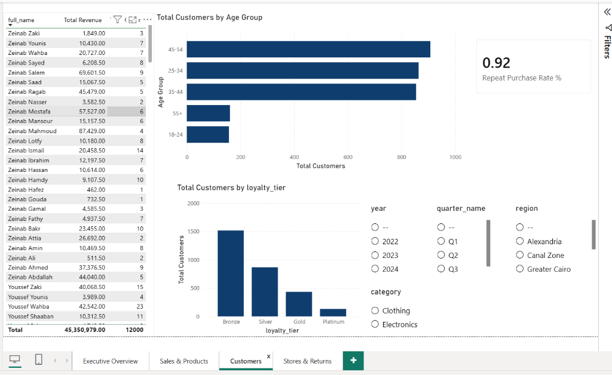
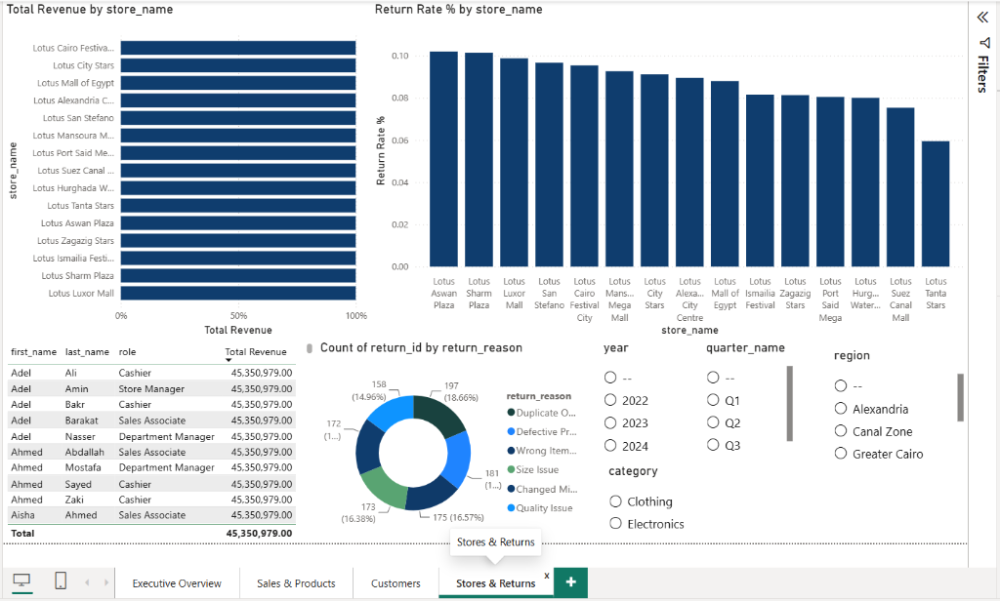

Lotus Retail — End-to-End Sales Analytics & BI Dashboard
Transforming 12,000 retail transactions (45.35M EGP) across 15 Egyptian stores into actionable commercial intelligence, regional performance drivers, and return diagnostics.
Lotus Retail, a nationwide retail chain operating 15 branches across Egypt, managed high transaction volumes but lacked unified visibility into store-level profitability, regional demand variations, and root causes behind product returns. Using Power Query for automated data cleaning, a robust Star-Schema Dimensional Model (4 Dimensions + 2 Fact tables), and an interactive 4-View Power BI Dashboard, I engineered an executive business intelligence suite. The analysis evaluated 45.35M EGP in gross revenue, 9.70M EGP in net profit (21.4% margin), a 92% customer repeat purchase rate, and diagnosed that 35%+ of returns stem directly from preventable sizing and quality defects.
High Transaction Volume, Low Strategic Clarity
Why multi-store retail chains struggle to optimize margins without unified dimensional analytics.
Fragmented Store Visibility
Lotus operated 15 stores across 7 Egyptian regions. Management had aggregated revenue figures but lacked store-level margin comparisons, obscuring locations where high operational overhead was eroding profitability.
Unmonitored Return Leakage
Product returns averaged 9% nationally but spiked to 10%+ in specific regional branches (Aswan, Sharm El Sheikh). The business had no systematic diagnostic to isolate whether returns were caused by discounts, shipping, sizing, or defects.
Unsegmented Customer Base
Although repeat purchases were strong, customer loyalty tiers (Bronze to Platinum) were not connected to marketing campaigns. Promotional discounts were broadcast broadly rather than targeted at VIP retention.
Project Goals & Target KPI Framework
Structuring actionable analytical pillars to guide multi-store operational decision-making.
Multi-Dimensional Profit Tracking
- Consolidate 12,000 transaction records into unified financial metrics.
- Calculate gross revenue, product costs, and true net profit margins.
- Enable instant slicing across 15 stores, 7 regions, and 3 calendar years.
Return Root-Cause Diagnosis
- Evaluate correlation between promotional discount tiers and return rates.
- Categorize return root causes (sizing, defects, wrong item, buyer change).
- Benchmark store-level return performance to isolate operational gaps.
Customer Segmentation & Loyalty
- Identify high-value demographic cohorts (Age groups and regional demand).
- Measure customer repeat purchase rates and loyalty tier migration.
- Map payment gateway preferences (InstaPay, Vodafone Cash, Cards, Fawry).
Interactive Power BI Dashboard Suite
Explore the 4 specialized dimensional views built for executive decision-makers.
Central Executive Performance Cockpit
Serves as the primary executive command center, uniting high-level commercial indicators, regional volume hierarchies, and 52-week annual revenue trajectories into a single view.

Product Hierarchy & Payment Channels
Provides granular product-level intelligence, testing whether promotional discounting increases merchandise return rates and mapping omnichannel payment adoption.

Demographic Segmentation & Loyalty Tiers
Analyzes customer purchasing frequency, demographic age distributions, and loyalty tier migration to inform customer retention and VIP marketing programs.

Branch Performance & Return Diagnostics
Enables store-by-store benchmarking across 15 physical locations, tracking staff role contributions and breaking down the root causes of returned orders.
From Messy Operational Tables to Executive Intelligence
A disciplined progression ensuring clean data, exploratory rigor, and dependable data modeling before visualization.
Power Query ETL
Cleaned raw operational tables: enforced schema data types, removed duplicate orders, normalized casing, and eliminated invalid test transactions.
Exploratory EDA
Formulated business hypotheses: analyzed geographic concentration, tested discount vs return elasticity, and investigated return drivers.
Star Schema Modeling
Architected a dimensional model with 2 Fact Tables (`fact_sales`, `fact_orders`) and 4 Dimension Tables for optimal slicing performance.
Power BI Dashboard
Built an interactive 4-view reporting suite with DAX KPI calculations, dynamic regional slicers, customer demographic views, and return diagnostics.
Data Cleaning & Power Query Engineering
Transforming raw, unformatted operational tables into trusted, production-ready relational data.
The Challenge in Raw Data
Raw retail operational data contained inconsistently formatted store names, unassigned column data types, duplicate transaction rows, and test entries that distorted revenue metrics. Analyzing this data directly would have led to inaccurate regional reporting and inflated order totals.
The Applied Solution
Applied a standardized Power Query (M) pipeline to enforce strict schema governance. All categorical fields were trimmed and normalized, dates were parsed into standard calendar formats, numerical monetary columns were typed as Fixed Decimals, and invalid records were systematically filtered.
| Power Query Step | Action Performed | Business & Analytical Impact |
|---|---|---|
| Promoted Headers | Converted raw file top rows into structured entity column headers. | Ensured unambiguous referencing across dimensions and facts. |
| Changed Type | Converted IDs to Text/Int, revenue to Decimal, and order dates to Date type. | Enables precise mathematical DAX calculations and Power BI time-intelligence. |
| Text Normalization | Trimmed whitespace, normalized casing across categories and store locations. | Eliminated split category rows (e.g., prevented "Clothing" vs "clothing " splits). |
| Removed Duplicates | Audited order and transaction IDs to eliminate duplicate row logging. | Guaranteed zero double-counting across the 45.35M EGP revenue total. |
| Filtered Rows | Removed internal test orders, missing customer records, and blank entries. | Preserved data integrity so executives base decisions solely on genuine sales. |
Exploratory Data Analysis (EDA) & Hypotheses
Investigating the data to extract commercial patterns before constructing the visual dashboards.
1. Regional Skew Discovery
Question: How evenly is revenue distributed across Egypt?
Finding: Greater Cairo generates 16.8M EGP (~37%) and Alexandria 8.4M EGP, combining for >55% of revenue. Upper Egypt and Red Sea/Sinai operate with lower volumes, indicating untapped expansion potential.
2. Discount Return Elasticity
Question: Do heavy promotional discounts cause higher customer returns?
Finding: Return rates remained virtually static at ~9% across all discount tiers (High 21%+, Medium 11-20%, Low 1-10%, No Discount). Returns are driven by product fit, not promotional bargain-hunting.
3. Return Root Cause Audit
Question: Why do customers return merchandise?
Finding: Sizing Issues accounted for 18.66% (197 returns), Defective Products 181 items, and Quality Issues 16.57% (175 items). Over 35% of return costs are operational and fixable via QA and size charts.
4. Demographic Purchase Power
Question: Which age brackets drive high transaction volume?
Finding: The 45–54 age bracket (900+ buyers) and 25–34 bracket (870+ buyers) form the core purchasing engine. Combined with a 92% repeat purchase rate, customer lifetime value (LTV) is exceptionally strong.
5. Omnichannel Payment Adoption
Question: How are Egyptian retail consumers settling orders?
Finding: Payment volume is balanced almost evenly across Cash (17.25%), InstaPay, Vodafone Cash, Credit Card (16.58%), Debit Card (16.55%), and Fawry (16.5%), confirming mainstream digital wallet maturity.
6. Category Balance
Question: Does Clothing or Electronics dominate overall sales?
Finding: Both major categories contribute nearly identical revenue shares (~22.6M EGP each), showing that Lotus has achieved balanced product diversification rather than relying on a single vertical.
Star Schema Data Model Architecture
Structuring high-performance relational links between transactional facts and descriptive dimensions.
Connecting central transactional facts to surrounding contextual dimensions with 1-to-Many relationships for instant dynamic cross-filtering.
- • customer_id (PK)
- • full_name
- • age & age_group
- • loyalty_tier (Bronze-Plat)
- • sale_id (PK)
- • order_id & date (FK)
- • product_id & store_id (FK)
- • revenue, cost, profit, margin
- • product_id (PK)
- • product_type & name
- • category (Clothing/Electronics)
- • cost_price & retail_price
- • store_id (PK)
- • store_name (15 Stores)
- • region (7 Regions)
- • store_manager
- • employee_id (PK)
- • staff_name & role
- • assigned_store_id (FK)
- • department
Key Analytical Insights & Discoveries
Translating quantitative dashboard patterns into actionable commercial intelligence.
Cairo & Alexandria Dominate Revenue Generation
Greater Cairo (16.8M EGP) and Alexandria (8.4M EGP) account for over 55% of all national sales. However, secondary urban hubs in the Nile Delta (7.5M EGP) and Canal Zone (6.5M EGP) demonstrate steady, profitable sales density with lower operational overhead.
92% Repeat Customer Base Anchors Business Stability
The retail operation exhibits an exceptional 92% repeat purchase rate. However, over 50% of these returning shoppers remain in the entry-level Bronze loyalty tier, representing an immediate upside opportunity for loyalty gamification and VIP upsells.
Return Rates Are Operational, Not Discount-Driven
Discount tier elasticity analysis proved that promotional discounting does not cause buyers to return items more frequently (~9% flat return rate). Instead, returns are driven by preventable sizing issues (18.66%) and item defects (16.57%).
Tourist Branch Return Anomalies
Stores located in major tourism centers (Aswan, Sharm El Sheikh, Luxor) exhibit return rates close to 10%—nearly double that of inland retail branches like Tanta (5.9%), suggesting sizing discrepancies during travel purchases and logistics friction.
Evidence-Based Business Recommendations
Four concrete operational strategies to protect margins and accelerate commercial growth.
Standardize Size Guides & Pre-Dispatch Fit Checks
Since 18.66% of all returns stem from sizing mismatch, introduce interactive sizing recommendation widgets on digital channels and standardize garment dimensions across suppliers to directly preserve profit margins.
Tiered Loyalty Gamification for Bronze Upgrades
Capitalize on the 92% repeat customer rate by creating targeted milestone incentives (e.g., free expedited shipping or exclusive early product drops) to transition Bronze customers into Silver and Gold tiers.
Dynamic Inventory Allocation by Regional Velocity
Reallocate safety stock from lower-velocity tourism branches toward high-velocity Greater Cairo and Nile Delta fulfillment hubs to ensure top-selling electronics and clothing SKUs never face out-of-stock lost revenue.
Regional Store Cost & Quality Assurance Audits
Conduct targeted operational QA audits in high-return branches (Aswan and Sharm El Sheikh) and implement strict pre-sale item inspection protocols to eliminate the 181 defective product returns logged across stores.
A Complete Commercial Intelligence Transformation
This project successfully transformed 12,000 raw transactional records into an intuitive, high-performance Power BI business intelligence suite. By combining rigorous Power Query data cleaning, star-schema dimensional modeling, and actionable visual storytelling, Lotus Retail leadership now possesses the clarity needed to optimize store margins, resolve return bottlenecks, and drive sustainable retail growth.